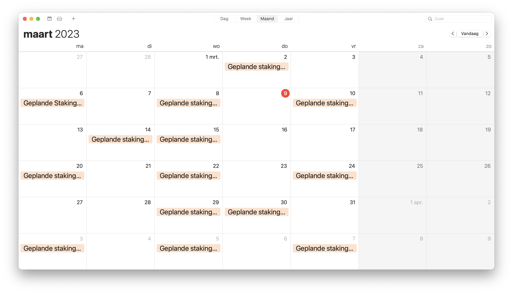

Staakt het ov vandaag?
Nee
Morgen niet, de eerstvolgende stakingsdag is: Maandag 6 maart 2023
Daarna wordt er door de vervoerders Arriva, EBS, Keolis, Qbuzz, RET en Transdev nog gestaakt op:

- Woensdag 8 maart 2023
- Vrijdag 10 maart 2023
- Dinsdag 14 maart 2023
- Woensdag 15 maart 2023
- Maandag 20 maart 2023
- Woensdag 22 maart 2023
- Vrijdag 24 maart 2023
- Woensdag 29 maart 2023
- Donderdag 30 maart 2023
- Maandag 3 april 2023
- Woensdag 5 april 2023
- Vrijdag 7 april 2023
Bij de NS en in het stadsvervoer in Amsterdam, Rotterdam en Den Haag wordt niet gestaakt.